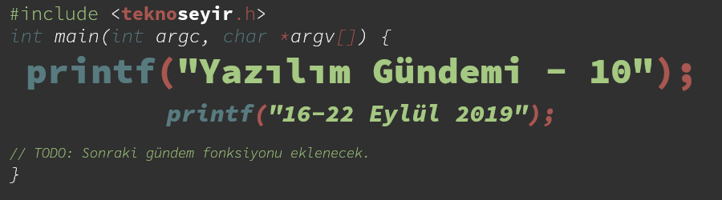
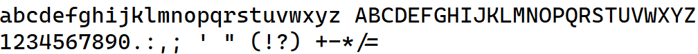

Yazılım Gündemi - 10
16-22 Eylül 2019
İçindekiler
- 1. Richard Stallman, Özgür Yazılım Vakfı başkanlığından ve MIT'deki görevinden istifa etti
- 2. Bir geliştirici ABD Göçmenlik ve Gümrük Muhafaza kurumunu protesto etti
- 3. GitHub, Semmle isimli şirketi satın aldı
- 4. Chrome 78 Beta ile gelen API yenilikleri
- 5. Safari 13 ile gelen API yenilikleri
- 6. Microsoft programcılar için yeni yazı stilini duyurdu: Cascadia Code
- 7. Etkinlik duyurusu: Ultimate Graphical Performance on STM32 microcontrollers with Qt for MCUs
- 8. Diğer Haberler
- 9. Lisans

< Önceki Gündem | 16-22 Eylül 2019 | Sonraki Gündem >
1 Richard Stallman, Özgür Yazılım Vakfı başkanlığından ve MIT'deki görevinden istifa etti
Daha doğrusu istifa etmek zorunda kaldı demek daha doğru olur. Çünkü kendisini hiç sokmaması gereken bir duruma soktu ve artık sonuçlarına katlanmak zorunda. Olaylar 12 Eylül tarihinde Medium sitesinde yayınlanan şu blog yazısı ile başlıyor. Bu yazıda, Richard Stallman'ın MIT'deki yapay zeka laboratuvarı mail listesindeki çocuk istismarını savunmaya kadar giden mailleri ifşa edilmiş. Mailleri aynı zamanda buradan da okuyabilirsiniz. Bunlar ortaya çıkınca doğal olarak herkes Stallman'ın üzerine gitmeye başladı ve sonuç bu şekilde oldu.
Olaylar hakkında fazla detaya girmeyeceğim zaten internet üzerinde hem İngilizce hem de Türkçe olarak birçok kaynakta yer aldı(*). Bu haftaki gündem değerlendirmesinde Murat Abi de değindi. Detayları oralardan okuyabilir ya da dinleyebilirsiniz.
Ben de özgür yazılım destekçisi birisiyim fakat Stallman'ın politik görüşlerini pek takip etmiyorum. Web sitesindeki şu sayfaya baktığımda buna benzer düşünceleri daha önce de dile getirdiğini gördüm. Bu tarz uçlarda dolaşmayı seven birisi olduğu açık fakat bu olayın savunulacak hiçbir yanı yok -sonradan yaptığının yanlış olduğunun farkına varmış olsa bile.
Ayrıca Richard Stallman'ın Özgür Yazılım Hareketi adına konuşma yapması da yasaklandı. Açıkcası her ne kadar hareketin kurucusu olsa bile Richard Stallman'ın ilahlaştırılmayıp, savunulmaya çalışılmaması beni sevindirdi. Bu demek oluyor ki, Özgür Yazılım Hareketi Richard Stallman olmadan da devam edebilir.
Kaynaklar:
2 Bir geliştirici ABD Göçmenlik ve Gümrük Muhafaza kurumunu protesto etti
Seth Vargo isimli geliştirici, kişisel projelerinin birinin, dolaylı bir yoldan ABD Göçmenlik ve Gümrük Muhafaza kurumuyla yapılan bir iş anlaşmasına dahil olması nedeniyle ilgili projesini her yerden kaldırdı.
Şu an Google'da mühendis olarak çalışan bu arkadaş, eskiden Chef isimli bir şirkette çalışıyormuş ve o zamanlarda Chef Sugar isimli kişisel bir proje geliştirip, GitHub hesabında ve RubyGems sitesinde paylaşmış. Daha sonra da ilgili kütüphane, Chef'in bağımlılıkları (dependency) arasına girmiş.
Bu haftanın başlarında Twitter'da bir kullanıcının Chef şirketi ile ABD Göçmenlik ve Gümrük Muhafaza kurumunun yaptığı 95.500$'lık anlaşmayı ortaya çıkarınca, kütüphanenin geliştiricisi de kurumu protesto etmek için ilgili kütüphanenin kodlarını GitHub'dan ve RubyGems sitesinden sildi. Bu durumdan etkilenen projeler de olmuş haliyle. Protesto nedeni olarak da "insanlık dışı muamele, temel insan haklarının reddi" vb. gibi konuları göstermiş. İlgili kurum hakkında pek bilgim yok ama söz konusu Amerika olunca geliştiriciye hak veresim geliyor.
Geliştirici bunu protesto amacıyla yapmış fakat kodları açık kaynak bir lisans ile paylaştığı için haliyle Chef şirketi de eski kodları bulup, tekrar kendi hesaplarına yüklemişler. Yine de ilginç bir protesto yöntemi olarak tarihe not düşmüş oldu.
3 GitHub, Semmle isimli şirketi satın aldı
Semmle, bir semantik kod analizi motoru. Yani kodlarınızı analiz edip, olası güvenlik zafiyetlerini ya da daha önce keşfedilmiş güvenlik açıklarını CVE numaraları ile birlikte sunan bir hizmet. Daha çok firmalardaki güvenlik takımındaki geliştiriciler tarafından kullanılan bir servis.
GitHub da bu şirketi satın alarak bünyesine kattı ve artık GitHub ile daha entegre olacağı hatta direkt GitHub'ın içerisinde bir servis olarak kullanılabileceği yönünde görüşler var. Bakalım önümüzdeki aylarda mutlaka bir kullanım senaryosu olarak karşımıza çıkarır bunu GitHub.
4 Chrome 78 Beta ile gelen API yenilikleri
19 Eylül günü yayınlanan bu chrome sürümü ile API sistemine bazı yenilikler gelmiş. Şöyle ki:
4.1 Özel CSS özellikleri ve değişkenler
W3C organizasyonunun CSS-TAG Houdini ekibi tarafından oluşturulmuş bu özellik sayesinde artık CSS tarafında kendimize özel css özellikleri oluşturabileceğiz. Yani bu şekilde:
window.CSS.registerProperty({
name: '--my-color',
syntax: '<color>',
inherits: false,
initialValue: 'black',
});
JavaScript tarafında özelliği tanımladıktan sonra, CSS tarafında böyle kullanabileceğiz:
.thing { --my-color: red; }
Front-End tarafına pek yakın birisi olmadığım için kullanım senaryosunu çözemedim ama buradaki sayfadan daha detaylı bilgiler alabilirsiniz.
4.2 Dosya sistemine erişim
Bu özelliğin geleceğini daha önceki yazılım gündemi yazısında (bkz: Yazılım Gündemi - 7) söylemiştim. Bu sürümde, Chrome'a eklenen Origin Trials özelliği üzerinden aktifleştirilebilir olmuş. Yani artık buna göre kodlanan siteler sizin seçtiğiniz bir dosyaya doğrudan erişip üzerinde, okuma-yazma işlemleri yapabilecek. İlgili yazıda bu özelliğin kullanım alanı için Google, çevrim içi uygulamalar (resim&video düzenleme, metin editörü vb.) bu özellik sayesinde daha kolay kullanılabilecek demiş. Önceden de bu tarz siteleri kullanabiliyorduk fakat orada site sadece dosyayı okuyabiliyordu. Mesela bir resimde değişiklik yaptığınızda o tarayıcıda kalıyordu, kaydet dediğinizde farklı bir dosya olarak indiriliyordu, artık siteler doğrudan dosyayı değiştirebilecekler. Bana kötüye kullanımı çok mümkün bir özellik gibi geliyor, ben şahsen o şekilde bir izini hiçbir siteye vermem. Siz ne düşünüyorsunuz bu özellik hakkında? Yorumlar kısmında konuşalım.
API sistemindeki diğer değişiklikler için konu bağlığına eklediğim bağlantıya tıklayabilirsiniz.
5 Safari 13 ile gelen API yenilikleri
Bu hafta iOS 13 ile birlikte yayınlanan Safari 13'de yeni API özellikleri mevcut. Bunlardan bazıları şu şekilde:
- Web siteler artık telefonun karanlık moda geçtiğini anlayıp kendilerini de karanlık temaya geçirebilecekler.
- "Apple ile Giriş Yap" özelliği web sitelere eklenebilecek
- Sayfada yer alan
iframeler artık sayfayı değiştiremeyecek. - Koni şeklinde CSS renk geçişleri (gradient) için destek.
- JavaScript artık daha az bellik kullanıyor.
__Secure-ve__Host-çerez ön-ekleri için destek.- Apple Pay için destek
API sistemindeki diğer değişiklikler için konu bağlığına eklediğim bağlantıya tıklayabilirsiniz.
6 Microsoft programcılar için yeni yazı stilini duyurdu: Cascadia Code

Microsoft, terminal ve programlama araçlarında kullanılmak üzere bu yeni yazı stilini SIL Open Font License isimli lisans ile açık kaynak şekilde duyurdu. Ben şu an geliştirilmekte olan Windows Terminal uygulamasının da varsayılan olarak bu yazı stilini kullanacağını tahmin ediyorum. Ben uzun zamandır Input Mono kullanıyorum ama belki bir ara bunu da deneyebilirim.
Şekil 3: Yazı stilinin Programming Ligarates desteği de var.
7 Etkinlik duyurusu: Ultimate Graphical Performance on STM32 microcontrollers with Qt for MCUs
Geçtiğimiz haftalarda tanıtılan Mikroişlemciler için Qt kütüphanesinin tanıtım etkinlikleri devam ediyor. 25 Eylül tarihinde de bir Webiner (sanal seminer) düzenlenecekmiş. İlgili arkadaşlar konu başlığına eklediğim bağlantıya tıklayarak kayıt olabilirler.
8 Diğer Haberler
- Microsoft, kendi C++ Standart Kütüphanesini açık kaynak yaptı: STL.
- Modern C kitabının ikinci baskısı Creative-Common lisansı ile çevrim içi olarak yayınlandı.
- KDAB Group, içerisinde çeşitli C++ araçlarının olduğu depoyu açık kaynak yaptı: KDToolbox.
- C programlama dilinde asenkron süreçler yönetmeye yarayan kütüphane açık kaynak olarak yayınlandı: async.h
- Go için önbellek kütüphanesi açık kaynak olarak yayınlandı: ristretto.
- Neo4j, yeni bir sorgu dili duyurdu: GQL (Graph Query Language)
- Eclipse 2019-09 sürümü yayınlandı.
- Eclipse IDE 2019-09'a Java 13 desteği kazandıran araç Eclipse Marketplace'de yerini aldı.
- Kubernetes 1.16 sürümü duyuruldu.
- LLVM 9.0.0 sürümü yayınlandı.
- Memcached 1.5.18 sürümü duyuruldu.
- OpenJDK 13 sürümü yayınlandı.
- HgLab 1.14 sürümü yayınlandı.
- YugaByteDB 2.0 GA sürümü yayınlandı.
- NeoVIM 0.4.0 sürümü yayınlandı, Değişiklik Notları.
- TextMate v2.0 sürümü yayınlandı.
- Akademik Çalışmalar:
9 Lisans

Yazılım Gündemi - 10 yazısı Eren Hatırnaz tarafından Creative Commons Atıf-GayriTicari-AynıLisanslaPaylaş 4.0 Uluslararası Lisansı (CC BY-NC-SA 4.0) ile lisanslanmıştır.